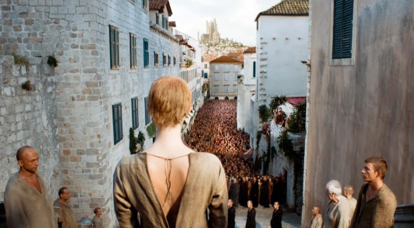
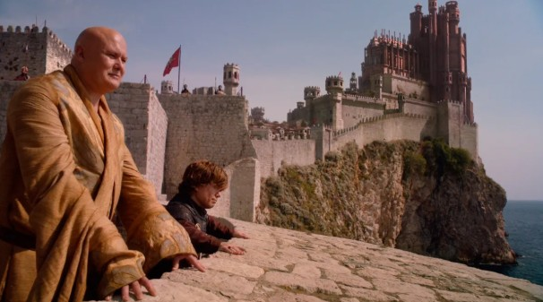

Dubrovnik
Croacia (2011)Dubrovnik fue la localización principal para 'Desembarco del Rey' (King's Landing), la capital de los Siete Reinos. Las murallas medievales, callejones de piedra y fortalezas costeras ofrecieron una base auténtica sobre la que añadir mínimos retoques digitales. La producción combinó tomas prácticas con matte paintings para ampliar el horizonte y los puertos. El éxito de la serie multiplicó el número de visitas estacionales y obligó a regular ciertos accesos para proteger el patrimonio histórico local.
Ubicación: Casco antiguo (Stari Grad)